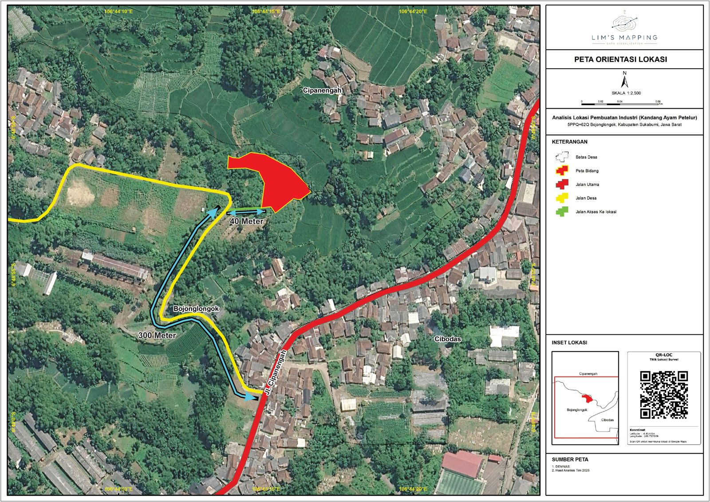

Dedicated Project Consultation
Each project is managed through clear communication, responsive collaboration, and a structured workflow.
Lim’s Mapping delivers professional GIS solutions by transforming spatial data, field surveys, and satellite imagery into accurate, insightful, and decision-ready maps.

Each project is managed through clear communication, responsive collaboration, and a structured workflow.
Specialized in GIS mapping, spatial data processing, digitization, and geospatial visualization.
Deliverables are prepared in formats and levels of detail aligned with specific project objectives.
01 / Featured Case Studies
Two selected case studies demonstrating improvements in spatial data quality, visual clarity, feature completeness, and information accessibility through GIS-based updates and refinement.


SPATIAL DATA UPDATE
The comparison highlights improved feature identification, including additional buildings and spatial objects, supported by more recent and reliable reference data.


CENCUS AREA MAPPING ENHANCEMENT
This project focused on refining a Census Economic 2026 area map in Makassar City by improving spatial details, boundary clarity, map symbols, and information labeling.
ADDITIONAL PROJECTS
LAND MAPPING
BOUNDARY & COORDINATE MAPPING
Delivering accurate land parcel boundaries, control points, coordinates, and area measurements through structured spatial mapping.
 SPATIAL DISTRIBUTION ANALYSIS
SPATIAL DISTRIBUTION ANALYSIS
SPATIAL VISUALIZATION
Transforming location-based data into clear spatial visualizations to identify concentration patterns, coverage, and accessibility.
 TOPOGRAPHIC ANALYSIS
TOPOGRAPHIC ANALYSIS
SLOPE ANALYSIS
Visualizing terrain conditions to support land evaluation, site assessment, and spatial planning decisions.
 LAND USE MAPPING
LAND USE MAPPING
SPATIAL LAND USE ANALYSIS
Mapping settlements, infrastructure networks, facilities, and functional zones through structured spatial analysis.
 SPATIAL PLANNING ANALYSIS
SPATIAL PLANNING ANALYSIS
EXISTING SPATIAL STRUCTURE
Presenting relationships between spatial functions as a reference for land use assessment and planning evaluation.

SITE ORIENTATION MAPAksesibilitas dan Lokasi
Providing site context through parcel location, road networks, access distance analysis, administrative boundaries, location insets, and coordinate references for preliminary site assessment.
02 / ABOUT LIM’S MAPPING
Lim’s Mapping provides professional GIS mapping and spatial data processing services for analysis, documentation, planning, and location-based decision making.
Each project follows a structured workflow, including data verification, spatial processing, cartographic design, and quality review to ensure accurate and purpose-driven mapping outputs.
03 / SERVICES
Four core service categories designed to transform location-based data into clear, accurate, and actionable spatial information.
Processing coordinates, defining spatial boundaries, and producing accurate land parcel maps with area information.
Transforming outdated maps and raw datasets into accurate, structured, and updated spatial information.
Visualizing spatial patterns, land use characteristics, terrain conditions, and other geospatial information for better understanding.
Designing professional maps for reports, presentations, documentation, publications, and print-ready deliverables.
SELECTED GIS CASE STUDIES
Use the comparison slider to explore the differences between previous and updated map outputs.
DATA & VISUAL ENHANCEMENT
The comparison highlights improvements in feature identification, including additional buildings and spatial elements captured through updated references. The enhanced dataset produces a more complete, detailed, and reliable map for field-based applications.
BEFORE
AFTER
BEFORE UPDATE
Limited visual clarity with incomplete representation of buildings, spatial features, and recent changes within the area.
AFTER UPDATE
Updated references improve the representation of buildings, road networks, administrative boundaries, and key spatial features with greater accuracy.
Utilizing the latest available references to improve spatial accuracy and map reliability.
More buildings and spatial features are identified, refined, and represented within the updated map.
Improved map clarity enables easier interpretation and more effective spatial decision-making.
CENSUS MAP REFINEMENT
A working map for the 2026 Economic Census area in Makassar City was refined through improved building details, boundary representation, map symbols, labels, and visual composition. The final output delivers clearer, more consistent, and more practical spatial information for operational reference.
Before
After
BEFORE IMPROVEMENT
Visual details, information hierarchy, and cartographic elements were not fully optimized, resulting in reduced clarity and slower interpretation of spatial information.
AFTER IMPROVEMENT
Building details, administrative boundaries, symbols, and labels were refined through structured cartographic approaches to produce clearer, more consistent, and highly readable maps.
Building representation and spatial positioning were improved to ensure key features are easily identified and provide more accurate spatial interpretation.
Boundary delineation and administrative lines were refined using consistent visual hierarchy to improve spatial understanding and territorial interpretation.
Symbols, labels, legends, and supporting map elements were reorganized to achieve visual balance while maintaining essential spatial information.
04 / PROJECT OUTPUT
File formats, spatial datasets, and deliverable components are customized according to project scope and intended application.
Final map products are provided in PDF and JPEG formats, suitable for reports, presentations, publications, and printing purposes.
Spatial datasets can be delivered in multiple formats, including SHP, KML, GeoJSON, and other formats based on project requirements.
Each map product includes essential cartographic elements such as title, legend, scale bar, north arrow, and data sources to ensure professional information presentation.
Coordinate reference systems are configured according to project location, dataset characteristics, and intended use to maintain spatial accuracy.
Map adjustments and revisions are managed according to project scope and initial agreements with clients.
Data sources, processing methods, and supporting information are documented to ensure transparency and reliability of final deliverables.
05 / WORKFLOW
Every project is handled through a structured process, from requirement discussion and data review to map production, revision, and final delivery.
STEP 01
Project objectives, location, intended use, output format, and timeline are discussed at the beginning to establish a clear project direction.
Project objectives, location, reference examples, expected deliverable format, and deadline
Defined project scope, data requirements, proposed method, and preliminary work estimation.
STEP 02
Files, attributes, coordinates, reference quality, and supporting materials are reviewed to assess readiness for processing.
Coordinate spreadsheets, KML, SHP, GeoJSON, imagery, map images, or other supporting documents.
Data readiness status, coordinate reference system confirmation, and processing plan.
STEP 03
The data is processed, analyzed, and organized into a draft map for review and refinement.
Reviewed datasets, information priorities, and preferred visual references.
Draft map, review notes, and revisions adjusted according to the agreed feedback scope.
STEP 04
The final files are reviewed, refined, and delivered in the agreed formats.
Draft approval, final output format, and any supporting file requirements.
Final deliverables ready for use, including supporting data according to project scope.
06 / CLIENT TESTIMONIALS
These testimonials are taken from actual client conversations after the mapping deliverables were received. Personal information has been anonymized to protect privacy.

07 / FREQUENTLY ASKED QUESTIONS
Quick answers regarding required data, deliverable formats, project timelines, revisions, and project confidentiality.
You may provide coordinates, Excel files, map images, satellite imagery, KML, SHP, GeoJSON, supporting documents, or any available location information.
Yes. Projects can be fully managed online through digital communication, including requirement discussion, data review, processing, and final delivery.
Deliverables can be customized based on project requirements, including PDF, JPEG, SHP, KML, GeoJSON, and other spatial data formats.
Project duration depends on area coverage, analysis complexity, data availability, deliverable requirements, and revision scope.
Yes. Revisions are available according to the agreed project scope and initial requirements.
Client data is used exclusively for project analysis and processing purposes. All spatial data, project information, and deliverables are kept confidential and will not be published or shared with third parties without client approval.
PROJECT CONSULTATION
Send your initial project information to receive guidance regarding required datasets, deliverable formats, processing approaches, and project estimation.
{kind=link}